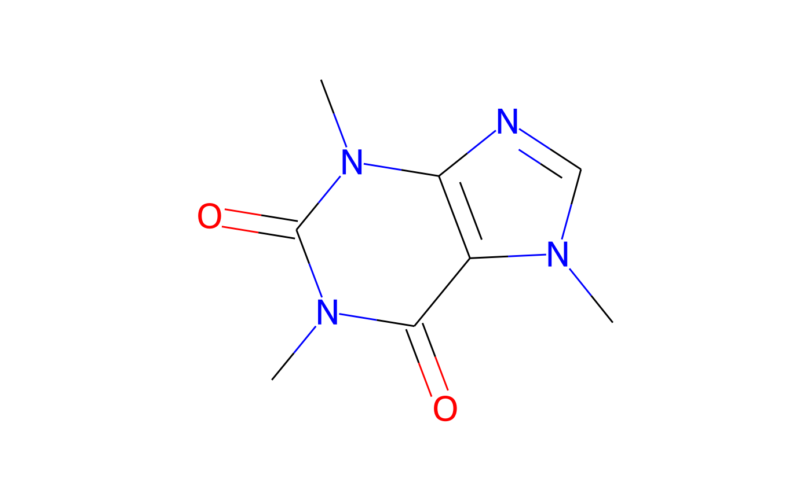

The class is initialised with an identifier. Chemical information is retrieved from the internet. Additionally, it can be generated using RDKit if RDKit and its python bindings are installed.
Format
An R6::R6Class generator object
Public fields
identifier(
character(1))
The identifier that was used to initiate the object, with attribute 'source'inchikey(
character(1))
InChI Key, with attribute 'source'smiles(
character())
SMILES code(s), with attribute 'source'mw(
numeric(1))
Molecular weight, with attribute 'source'pubchem(
list())
List of information retrieved from PubChemrdkitList of information obtained with RDKit
mol<rdkit.Chem.rdchem.Mol> object
svgSVG code
PictureGraph as a grImport::Picture object obtained using the grImport package
Pict_font_sizeFont size as extracted from the intermediate PostScript file
pdf_heightHeight of the MediaBox in the pdf after cropping
p0Vapour pressure in Pa
cwsatWater solubility in mg/L
PUFPlant uptake factor
chyamlList of information obtained from a YAML file
TPsList of transformation products as chent objects
transformationsData frame of observed transformations
soil_degradationDataframe of modelling DT50 values
soil_ffDataframe of formation fractions
soil_sorptionDataframe of soil sorption data
Methods
Method new()
Creates a new instance of this R6 class.
Arguments
identifierIdentifier to be stored in the object
smilesOptional user provided SMILES code
inchikeyOptional user provided InChI Key
pubchemShould an attempt be made to retrieve chemical information from PubChem via the webchem package?
pubchem_fromPossibility to select the argument that is used to query pubchem
rdkitShould an attempt be made to retrieve chemical information from a local rdkit installation via python and the reticulate package?
templateAn optional SMILES code to be used as template for RDKit
chyamlShould we look for a identifier.yaml file in the working directory?
Method add_PUF()
Add a plant uptake factor
Method add_transformation()
Add a line in the internal dataframe holding observed transformations
Usage
chent$add_transformation(
study_type,
TP_identifier,
max_occurrence,
remark = "",
source = NA,
pages = NA
)Arguments
study_typeA characterisation of the study type
TP_identifierAn identifier of one of the transformation products in
self$TPsmax_occurrenceThe maximum observed occurrence of the transformation product, expressed as a fraction of the amount that would result from stochiometric transformation
remarkA remark
sourceAn acronym specifying the source of the information
pagesThe pages from which the information was taken
Method add_soil_degradation()
Add a line in the internal dataframe holding modelling DT50 values
Usage
chent$add_soil_degradation(
soils,
DT50_mod,
DT50_mod_ref,
type = NA,
country = NA,
pH_orig = NA,
pH_medium = NA,
pH_H2O = NA,
perc_OC = NA,
temperature = NA,
moisture = NA,
category = "lab",
formulation = NA,
model = NA,
chi2 = NA,
remark = "",
source,
page = NA
)Arguments
soilsNames of the soils
DT50_modThe modelling DT50 in the sense of regulatory pesticide fate modelling
DT50_mod_refThe normalised modelling DT50 in the sense of regulatory pesticide fate modelling
typeThe soil type
countryThe country (mainly for field studies)
pH_origThe pH stated in the study
pH_mediumThe medium in which this pH was measured
pH_H2OThe pH extrapolated to pure water
perc_OCThe percentage of organic carbon in the soil
temperatureThe temperature during the study in degrees Celsius
moistureThe moisture during the study
categoryIs it a laboratory ('lab') or field study ('field')
formulationName of the formulation applied, if it was not the technical active ingredient
modelThe degradation model used for deriving
DT50_modchi2The relative error as defined in FOCUS kinetics
remarkA remark
sourceAn acronym specifying the source of the information
pageThe page from which the information was taken
Method add_soil_sorption()
Add soil sorption data
Usage
chent$add_soil_sorption(
soils,
Kf,
Kfoc,
N,
type = NA,
pH_orig = NA,
pH_medium = NA,
pH_H2O = NA,
perc_OC = NA,
perc_clay = NA,
CEC = NA,
remark = "",
source,
page = NA
)Arguments
soilsNames of the soils
KfThe sorption constant in L/kg, either linear (then
Nis 1) or according to FreundlichKfocThe constant from above, normalised to soil organic carbon
NThe Freundlich exponent
typeThe soil type
pH_origThe pH stated in the study
pH_mediumThe medium in which this pH was measured
pH_H2OThe pH extrapolated to pure water
perc_OCThe percentage of organic carbon in the soil
perc_clayThe percentage of clay in the soil
CECThe cation exchange capacity
remarkA remark
sourceAn acronym specifying the source of the information
pageThe page from which the information was taken
Method pdf()
Write a PDF image of the structure
Usage
chent$pdf(
file = paste0(self$identifier, ".pdf"),
dir = "structures/pdf",
template = NULL
)Method png()
Write a PNG image of the structure
Usage
chent$png(
file = paste0(self$identifier, ".png"),
dir = "structures/png",
antialias = "gray"
)Arguments
fileThe file to write to
dirThe directory to write the file to
antialiasPassed to png
Method emf()
Write an EMF image of the structure using emf
Usage
chent$emf(file = paste0(self$identifier, ".emf"), dir = "structures/emf")Examples
caffeine <- chent$new("caffeine")
#> PubChem:
#> Trying to get chemical information from RDKit using PubChem SMILES
#> CN1C=NC2=C1C(=O)N(C(=O)N2C)C
print(caffeine)
#> <chent>
#> Identifier $identifier caffeine
#> InChI Key $inchikey RYYVLZVUVIJVGH-UHFFFAOYSA-N
#> SMILES string $smiles:
#> PubChem
#> "CN1C=NC2=C1C(=O)N(C(=O)N2C)C"
#> Molecular weight $mw: 194.2
#> PubChem synonyms (up to 10):
#> [1] "caffeine" "58-08-2"
#> [3] "Guaranine" "1,3,7-Trimethylxanthine"
#> [5] "Methyltheobromine" "Theine"
#> [7] "Thein" "Cafeina"
#> [9] "Koffein" "Mateina"
if (!is.null(caffeine$Picture)) {
plot(caffeine)
}

oct <- chent$new("1-octanol", smiles = "CCCCCCCCO", pubchem = FALSE)
#> Trying to get chemical information from RDKit using user SMILES
#> CCCCCCCCO
#> Error in if (!is.na(self$mw)) { if (round(self$rdkit$mw, 1) != round(self$mw, 1)) { message("RDKit mw is ", self$rdkit$mw) message("mw is ", self$mw) }} else { self$mw <- self$rdkit$mw attr(self$mw, "source") <- "rdkit"}: argument is of length zero
print(oct)
#> Error: object 'oct' not found